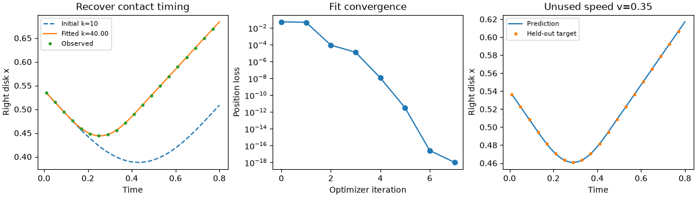

Note
Go to the end to download the full example code.
Infer contact stiffness from observed trajectories#
Recover an unknown normal contact stiffness from the positions of two colliding disks. The forward model is a JaxDEM simulation; JAX differentiates the complete, fixed-duration trajectory. A short optimization fits synthetic observations, then predicts a second collision at a different impact speed.
The disks have known unit masses and radius 0.5. Gravity, damping, friction and rotation are absent. These assumptions make one stiffness identifiable and keep the first inverse problem small. Observations are noise-free and generated with the same time discretization as the fit, so this is a verification example rather than a claim of experimental calibration.
This example additionally requires Matplotlib for plotting and SciPy for
the optimizer: python -m pip install matplotlib scipy.
Forward mechanics and the inverse problem#
For overlap \(\delta=\max(0,2R-r)\), the normal spring stores \(U=\tfrac12 k\delta^2\). During a head-on elastic collision,
Stiffness changes the compression and contact duration. Positions measured during and after contact therefore contain information about \(k\). Velocities measured only long before and long after this perfectly elastic collision would be insufficient: their magnitudes do not change with stiffness. If mass were also unknown, this experiment would primarily identify the ratio \(k/m_{\mathrm{eff}}\).
Fit a dimensionless log parameter \(\theta=\log(k/k_{\rm ref})\):
This enforces positive stiffness. JAX evaluates the loss and its derivative
through JaxDEM’s Verlet steps; the optimizer receives that derivative.
See the JAX automatic differentiation guide for the
underlying value_and_grad transformation.
import jax
import jax.numpy as jnp
from dataclasses import replace
import matplotlib.pyplot as plt
import numpy as np
from scipy.optimize import minimize
import jaxdem as jdem
jax.config.update("jax_enable_x64", True)
radius = 0.5
mass = 1.0
reference_stiffness = 1.0
true_stiffness = 40.0
initial_stiffness = 10.0
dt = 0.002
n_frames = 80
save_stride = 5
training_speed = 0.5 # speed of each disk; relative approach speed is twice this
validation_speed = 0.35
times = dt * save_stride * np.arange(1, n_frames + 1)
initial_state = jdem.State.create(
pos=jnp.array([[-0.54, 0.0], [0.54, 0.0]]),
rad=jnp.full(2, radius),
mass=jnp.full(2, mass),
)
material_table = jdem.MaterialTable.from_materials(
[
jdem.Material.create(
"elastic",
young=reference_stiffness,
poisson=0.3,
density=mass / (np.pi * radius**2),
)
]
)
initial_system = jdem.System.create(
state=initial_state,
dt=dt,
collider_type="naive",
force_model_type="spring",
rotation_integrator_type=None,
mat_table=material_table,
)
A differentiable JaxDEM experiment#
SpringForce reads young_eff as its linear stiffness. The table’s
harmonic matching gives young_eff[0, 0] == young[0] for the single
material used here. Replace both the scalar property and its derived pair
value when changing the material: updating young alone would leave the
precomputed pair table stale. Here \(k\) is this model’s effective
spring stiffness, with units force/length, rather than a continuum modulus
inferred through an additional Hertz contact model.
Every call starts from the same positions and initializes its own forces. The all-pairs collider has no capacity to overflow. Static frame and stride counts make the rollout differentiable in reverse mode. The compiled function is reused for every optimizer evaluation and for the held-out speed; no Python factory is called inside the optimization loop.
def save_positions_and_velocities(state, system):
return state.pos, state.vel
@jax.jit
def simulate(log_stiffness, speed):
stiffness = reference_stiffness * jnp.exp(log_stiffness)
table = replace(
material_table,
props={**material_table.props, "young": jnp.full((1,), stiffness)},
pair={**material_table.pair, "young_eff": jnp.full((1, 1), stiffness)},
)
state = replace(
initial_state,
vel=jnp.array([[speed, 0.0], [-speed, 0.0]]),
)
system = replace(initial_system, mat_table=table)
state, system = jdem.System.initialize(state, system)
_, _, trajectory = jdem.System.trajectory_rollout(
state,
system,
n=n_frames,
stride=save_stride,
save_fn=save_positions_and_velocities,
)
return trajectory
true_log_stiffness = jnp.log(true_stiffness / reference_stiffness)
initial_log_stiffness = jnp.log(initial_stiffness / reference_stiffness)
observed_positions, observed_velocities = simulate(
true_log_stiffness, jnp.asarray(training_speed)
)
@jax.jit
def loss(log_stiffness):
positions, _ = simulate(log_stiffness, jnp.asarray(training_speed))
return jnp.mean(((positions[:, :, 0] - observed_positions[:, :, 0]) / radius) ** 2)
loss_and_gradient = jax.jit(jax.value_and_grad(loss))
Check the derivative before trusting the fit#
The contact force is continuous but its derivative changes at contact activation. The derivative below is that of the discrete, fixed-step simulation. Check it against a centered finite difference away from a contact exactly landing on an integration boundary. Float64 helps separate finite-difference cancellation from a real derivative error.
Reducing dt at fixed physical observation times is a separate check of
the discretization. For the target, \(\omega\Delta t\simeq0.018\), with
\(\omega=\sqrt{k/m_{\mathrm{eff}}}\). The analytic contact solution below
provides an independent forward-model check.
check_parameter = jnp.log(18.0 / reference_stiffness)
difference_step = 1e-4
_, automatic_gradient = loss_and_gradient(check_parameter)
finite_difference = (
loss(check_parameter + difference_step) - loss(check_parameter - difference_step)
) / (2.0 * difference_step)
np.testing.assert_allclose(automatic_gradient, finite_difference, rtol=2e-4, atol=1e-8)
assert abs(float(automatic_gradient)) > 1e-5
print(
f"Gradient at k=18: AD={float(automatic_gradient):.8f}, "
f"finite difference={float(finite_difference):.8f}"
)
Gradient at k=18: AD=-0.04288933, finite difference=-0.04288933
Fit one positive parameter#
L-BFGS-B uses the JAX derivative and bounds the search to a physically specified range. The bounds are not observations; they just avoid unresolved contacts and irrelevant stiffness scales in this first example. Record every accepted iterate to see the actual convergence.
iteration_stiffness = [initial_stiffness]
iteration_loss = [float(loss(initial_log_stiffness))]
def scipy_objective(parameters):
value, derivative = loss_and_gradient(jnp.asarray(parameters[0]))
return float(value), np.array([float(derivative)])
def record_iteration(parameters):
iteration_stiffness.append(reference_stiffness * np.exp(parameters[0]))
iteration_loss.append(float(loss(jnp.asarray(parameters[0]))))
fit = minimize(
scipy_objective,
np.array([float(initial_log_stiffness)]),
jac=True,
method="L-BFGS-B",
bounds=[(np.log(5.0 / reference_stiffness), np.log(100.0 / reference_stiffness))],
callback=record_iteration,
options={"maxiter": 30, "gtol": 1e-10, "ftol": 1e-14},
)
if not fit.success:
raise RuntimeError(f"Stiffness fit failed: {fit.message}")
fitted_log_stiffness = jnp.asarray(fit.x[0])
fitted_stiffness = reference_stiffness * np.exp(fit.x[0])
np.testing.assert_allclose(fitted_stiffness, true_stiffness, rtol=1e-3)
assert float(fit.fun) < iteration_loss[0] * 1e-6
print(
f"Recovered k={fitted_stiffness:.6f}, target={true_stiffness:.1f}; "
f"{fit.nit} iterations, loss={float(fit.fun):.3e}"
)
Recovered k=40.000000, target=40.0; 7 iterations, loss=5.787e-26
Independent mechanics check and a held-out experiment#
Before contact the right disk moves left at training_speed. After the
initial gap closes at \(t_0\), its overlap obeys
\(\delta=(2v/\omega)\sin[\omega(t-t_0)]\) until separation. Compare the
numerical overlap with that solution, and verify conservation of total
momentum. The fitted parameter then predicts an unused impact speed.
effective_mass = mass / 2.0
omega = np.sqrt(true_stiffness / effective_mass)
contact_start = (1.08 - 2.0 * radius) / (2.0 * training_speed)
contact_age = times - contact_start
analytic_overlap = np.where(
(contact_age >= 0.0) & (contact_age <= np.pi / omega),
2.0 * training_speed / omega * np.sin(omega * contact_age),
0.0,
)
numerical_overlap = np.maximum(
0.0, 2.0 * radius - np.diff(np.asarray(observed_positions[:, :, 0]), axis=1)[:, 0]
)
np.testing.assert_allclose(numerical_overlap, analytic_overlap, atol=2e-5)
np.testing.assert_allclose(mass * observed_velocities.sum(axis=1), 0.0, atol=1e-12)
initial_positions, _ = simulate(initial_log_stiffness, jnp.asarray(training_speed))
fitted_positions, _ = simulate(fitted_log_stiffness, jnp.asarray(training_speed))
validation_target, _ = simulate(true_log_stiffness, jnp.asarray(validation_speed))
validation_prediction, _ = simulate(fitted_log_stiffness, jnp.asarray(validation_speed))
validation_rmse = float(
jnp.sqrt(jnp.mean((validation_prediction - validation_target) ** 2))
)
assert validation_rmse < 1e-5 * radius
print(f"Held-out speed {validation_speed}: position RMSE={validation_rmse:.3e}")
Held-out speed 0.35: position RMSE=6.112e-14
Read the result#
The initial trajectory compresses too far and rebounds too late. The fitted trajectory matches both the calibration collision and the held-out speed. With experimental data, introduce observation noise and missing frames, fit several impact speeds, and report parameter uncertainty. Unknown mass, damping or initial velocity can create tradeoffs; successful fitting of one noiseless collision does not resolve those additional unknowns.
fig, axes = plt.subplots(1, 3, figsize=(12, 3.4), layout="constrained")
axes[0].plot(
times, initial_positions[:, 1, 0], "--", label=f"Initial k={initial_stiffness:g}"
)
axes[0].plot(times, fitted_positions[:, 1, 0], label=f"Fitted k={fitted_stiffness:.2f}")
axes[0].plot(times[::4], observed_positions[::4, 1, 0], "o", ms=3, label="Observed")
axes[0].set(xlabel="Time", ylabel="Right disk x", title="Recover contact timing")
axes[0].legend(fontsize=8)
axes[1].semilogy(np.maximum(iteration_loss, 1e-18), "o-")
axes[1].set(
xlabel="Optimizer iteration", ylabel="Position loss", title="Fit convergence"
)
axes[2].plot(times, validation_prediction[:, 1, 0], label="Prediction")
axes[2].plot(
times[::4], validation_target[::4, 1, 0], "o", ms=3, label="Held-out target"
)
axes[2].set(
xlabel="Time", ylabel="Right disk x", title=f"Unused speed v={validation_speed}"
)
axes[2].legend(fontsize=8)
plt.show()

Total running time of the script: (0 minutes 7.990 seconds)